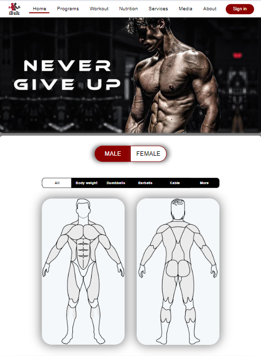
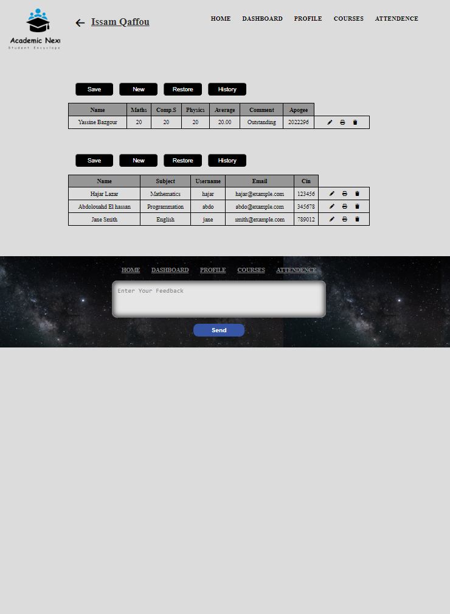
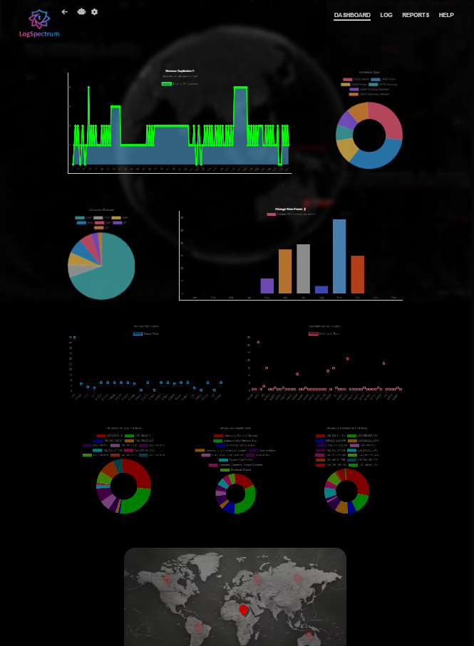
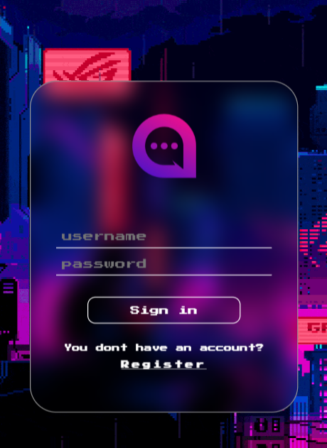

iBulk is a fitness website that helps users achieve health goals with personalized workout
programs, nutritional guidance, and meal plans. It features a body needs calculator,
interactive quizzes, personal coaching, a fitness library, and an equipment store.
Launched in 2022, it was built using HTML, CSS, and JavaScript.
Visit iBulk
for more details.

Academic Nexus is a student data management web application, a comprehensive solution
for efficient student information management. It provides a centralized hub for educators,
administrators, and students to navigate the academic journey with ease and precision.
The system allows users to track grades an interface. Created in 2023 using Php
Visit Academic Nexus
for more details.

Log Spectrum is an innovative web application designed to visualize and monitor intrusion
detection systems by analyzing log files generated by Snort, a widely-used intrusion detection
system. It offers a detailed and user-friendly interface for managing and interpreting
security logs, ensuring robust network security monitoring.
Built in 2024 using HTML, CSS, JavaScript and Node.
Visit Log Spectrum
for more details.

Whisper is an innovative chat application designed to facilitate seamless and real-time
communication. Users can log into their accounts and engage in conversations with others instantly.
The backend is robust and highly functional, ensuring that messages are delivered and received promptly.
Whisper is an experience of real-time connectivity and effortless communication.
Hosted in 2024 using HTML, CSS, JavaScript and Node.
Visit Whisper
for more details.
We'd tell you more, but where's the fun in that? Stay tuned for a surprise!